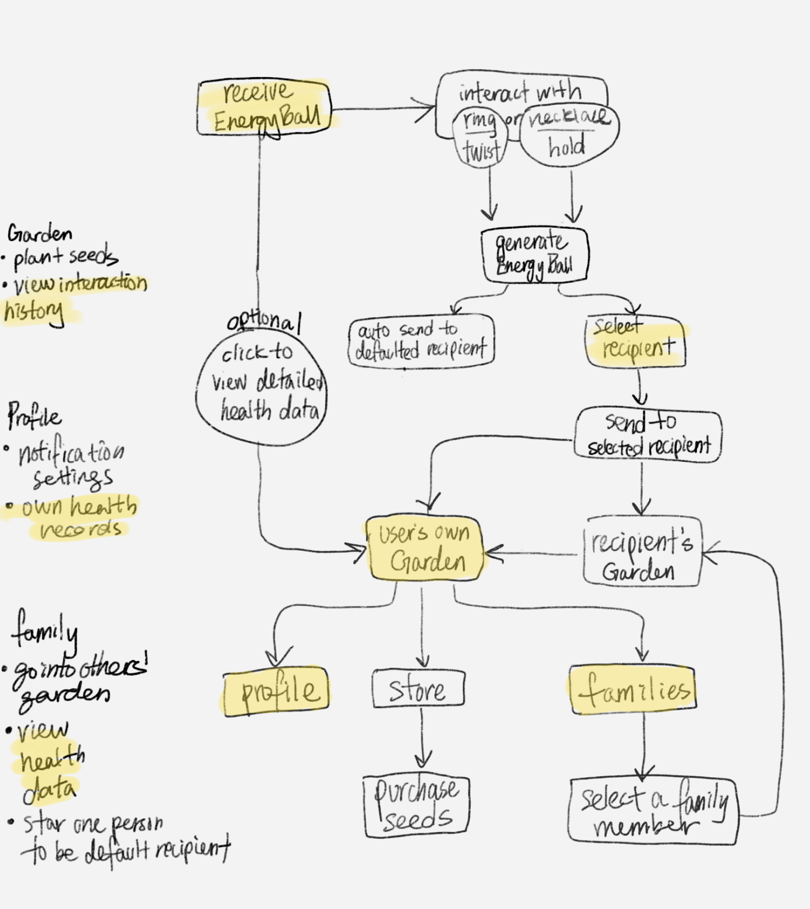

Grow
"communicate with loved ones"
Project Summary
We want to facilitate the continuation of intergenerational relations in immigrant families during the Pandemic through a combined experience of a smart wearable device and a gamified interactive mobile app.
1 Emphasize

- Traditional chinese culture - filial piety → nonexistent between immigrant grandparents & grandchildren due to acculturation gaps (messages are hard to reconcile)
- Do not share similar attitudes and values → gap between levels of affection
- Level of acculturation was found to affect intergenerational communication and grandparent–grandchild relationships among Chinese New Zealanders, Mexican Americans, and Australian Vietnamese
- Some grandparents said they could not understand their grandchildren because of significant language barriers.Others said they felt lonely because of this language barrier.
- Some scholars describe acculturation to the dominant American culture as "the erosion of traditional cultural language, values, and practices" and find that it negatively impacts intergenerational relationships. Such processes have been documented primarily among groups of immigrants from Asia and Latin America.
- Many experience the strain and stress of "ambiguous loss," which occurs when physically absent family members continue to be psychologically present in the minds and hearts of the first generation immigrants
- Many parents expressed sorrow about the limited interactions their children have with their extended family and grandparents residing in Eastern European countries.
2 Define
DIFFICULTIES IN THE TRANSNATIONAL & INTERGENERATIONAL RELATIONSHIP
- Acculturation gaps make interactions hard to reconcile (collectivist vs individualistic values clashes)
- Dendent on whether the middle generation facilitates this relationship
- Language barrier
- Grandparents value extended family ties, while grandchildren not so much
- *COVID* no in-person interaction/visits due to travel restrictions - feeling even more distant & concerned about the family members’ daily health
- Grandparents (especially Asians) hide their issues to avoid worrying family members
- Existed wellness tracking products are not friendly to elders and not attractive enough for teenagers.
GOALS
Facilitate the continuation of intergenerational relations in immigrant families during the Pandemic through a combined experience of a smart wearable device and a gamified interactive mobile app.
by
- Bridging the acculturation gap between grandparents and grandchildren
- Eliminating barriers of language & time zone difference
- Enhancing relationships in a subtle way that does not interrupt daily routines
- Constructing interaction with shared goals and meaningful communication
- Providing daily health data
3 Ideate

storyboard 1

storyboard 2

storyboard 3

4 Prototype



5 Final Solution